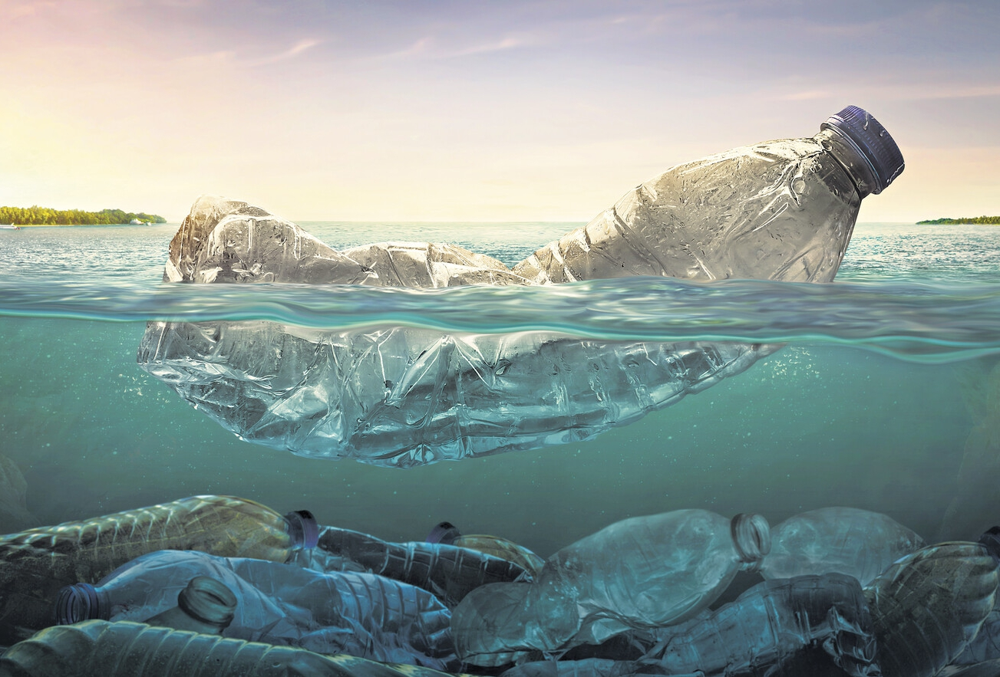

CONTAMINACION MUNDIAL
La contaminación ambiental o polución es la introducción de sustancias nocivas u otros elementos físicos en un medio ambiente, que provocan que este sea inseguro o no apto para su uso.1 El medio ambiente puede ser un ecosistema, un medio físico o un ser vivo. El contaminante puede ser una sustancia química o energía (como sonido, calor, luz o radiactividad). Es siempre una alteración negativa del estado natural del medio ambiente y, por lo general, se produce como consecuencia de la actividad humana considerándose una forma de impacto ambiental.
La contaminación puede clasificarse según el tipo de fuente de donde proviene, o por la forma contaminante que emite o medio que contamina. Existen muchos agentes contaminantes, entre ellos las sustancias químicas (como plaguicidas, cianuro, herbicidas y otros), los residuos urbanos, el petróleo o las radiaciones ionizantes. Todos estos pueden producir enfermedades, daños en los ecosistemas o el medio ambiente. Además, existen muchos contaminantes gaseosos que juegan un papel importante en diferentes fenómenos atmosféricos, como la generación de lluvia ácida, el debilitamiento de la capa de ozono y el cambio climático.
Hay muchas formas de combatir la contaminación, así como legislaciones internacionales que regulan las emisiones contaminantes de los países que se adquieren a estas políticas. La contaminación está generalmente ligada al desarrollo económico y social. Actualmente muchas organizaciones internacionales como la ONU ubican al desarrollo sostenible como una de las formas de proteger al medio ambiente para las actuales y futuras generaciones.
En 2015, la contaminación causó la muerte a más de 9 millones de personas.2 El último informe de la Organización Meteorológica Mundial (OMM) señaló que en 2021 la concentración de CO2 en la atmósfera fue la más alta de la historia, con 419,7 ppm. Los países que más contribuyen al efecto invernadero a nivel mundial son China con 9,8 millones de toneladas de emisiones de CO2, Estados Unidos con 4,9 millones de toneladas de emisiones de CO2 e India con 2,4 millones de toneladas de emisiones de CO2. Alemania es el país europeo con las mayores emisiones de CO2 debido a su gran dependencia del carbón. Los desechos sólidos abandonados constituyen una molestia pública. Es un reto ya que afectan directamente la salud humana, los medios de subsistencia y el medio ambiente. La incorrecta gestión de estos genera obstrucción en los desagües y drenajes abiertos, invade los caminos, resta estética al panorama y emiten olores desagradables y polvos irritantes. Por esta razón, es un problema que concierne a todos los habitantes del planeta.
